Setup CLI — Pico W & Display First-Time Setup¶
An interactive Python CLI that walks through the entire Pico W development environment setup — from installing the C/C++ ARM toolchain to flashing your first Hello World onto the e-ink display.
This project runs entirely in C — no MicroPython, no CircuitPython. C gives us direct hardware control, deterministic timing, and the full performance of the RP2040's dual Cortex-M0+ cores.
Target audience: Someone with the hardware in hand and zero prior embedded development experience.
Platform: Linux (Arch/CachyOS — Debian/Ubuntu alternatives noted where they differ).
Usage¶
python3 setup.py # interactive step-by-step walkthrough
python3 setup.py --status # show current setup state
python3 setup.py --step N # jump to step N
python3 setup.py --list # list all steps
python3 setup.py --test-setup # install testing dependencies (tk, pytest, Playwright)
No external dependencies required — runs on Python 3.9+ with only the standard library.
Help Output¶
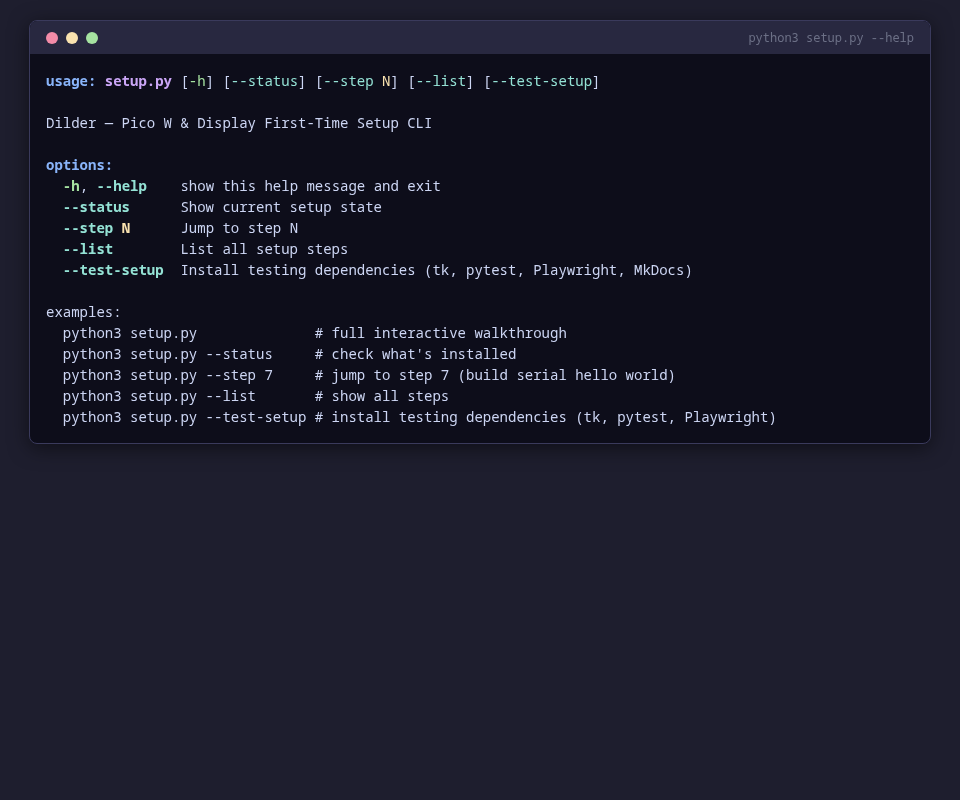
Step List¶
Use --list to see all 15 steps and their completion status:

What Each Step Does¶
The script walks through 15 steps, split into three checkpoints.
Checkpoint 1 — Serial Hello World (Steps 1–9)¶
Verifies your toolchain works end-to-end without any display wiring.
| Step | Name | Automated? | Description |
|---|---|---|---|
| 1 | Check Prerequisites | Yes | Detects your Linux distro, verifies git, cmake, Python, Tkinter, pyserial |
| 2 | Install ARM Toolchain | Yes | Runs the correct pacman/apt/dnf command for your distro to install arm-none-eabi-gcc, cmake, ninja |
| 3 | Clone Pico SDK | Yes | Clones the official pico-sdk with submodules to ~/pico/pico-sdk |
| 4 | Set PICO_SDK_PATH | Yes | Appends export PICO_SDK_PATH=... to your .zshrc or .bashrc |
| 5 | Serial Port Permissions | Yes | Adds your user to the correct serial group (uucp on Arch/CachyOS, dialout on Debian/Ubuntu) |
| 6 | Install VSCode Extensions | Yes | Installs C/C++, CMake Tools, Serial Monitor, and Cortex-Debug extensions |
| 7 | Build Hello Serial | Yes | Copies SDK helper, runs CMake configure + Ninja build for hello-world-serial |
| 8 | Flash Hello Serial | Semi | Guides you through BOOTSEL mode, auto-detects the RPI-RP2 mount, copies the .uf2 |
| 9 | Verify Serial Output | Manual | Shows how to open a serial monitor, what output to expect, confirms Checkpoint 1 |
Checkpoint 2 — Display Hello World (Steps 10–14)¶
Connects the Waveshare display and gets pixels on screen.
| Step | Name | Automated? | Description |
|---|---|---|---|
| 10 | Connect the Display | Manual | Step-by-step instructions for sliding the Waveshare HAT onto the Pico W headers |
| 11 | Get Waveshare Library | Yes | Clones the Waveshare repo, copies the C driver and font files into the project |
| 12 | Build Hello Display | Yes | CMake configure + Ninja build for hello-world (the display version) |
| 13 | Flash Hello Display | Semi | Same BOOTSEL flow, auto-detects mount, copies hello_dilder.uf2 |
| 14 | Verify Display Output | Manual | Shows expected display text, confirms Checkpoint 2, prints completion banner |
Checkpoint 3 — Docker Toolchain (Step 15)¶
Sets up Docker for building standalone firmware from the DevTool.
| Step | Name | Automated? | Description |
|---|---|---|---|
| 15 | Docker Build Toolchain | Yes | Installs Docker, verifies daemon + compose, pre-builds the ARM cross-compilation container |
Step-by-Step Walkthrough¶
Step 1 — Check Prerequisites¶
Detects your Linux distribution and verifies that all required tools are installed: git, cmake, Python, Tkinter (for DevTool), and pyserial (for serial communication).

Step 2 — Install ARM Toolchain¶
Installs the ARM cross-compiler (arm-none-eabi-gcc), CMake, and Ninja build system using your distro's package manager.
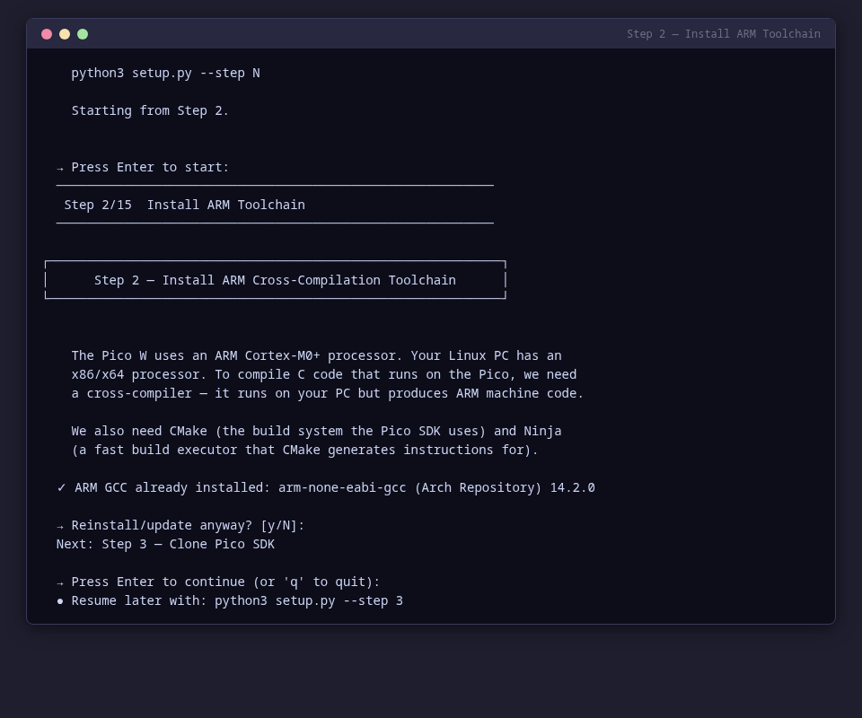
Step 3 — Clone Pico SDK¶
Downloads the official Raspberry Pi Pico C/C++ SDK with all submodules to ~/pico/pico-sdk.
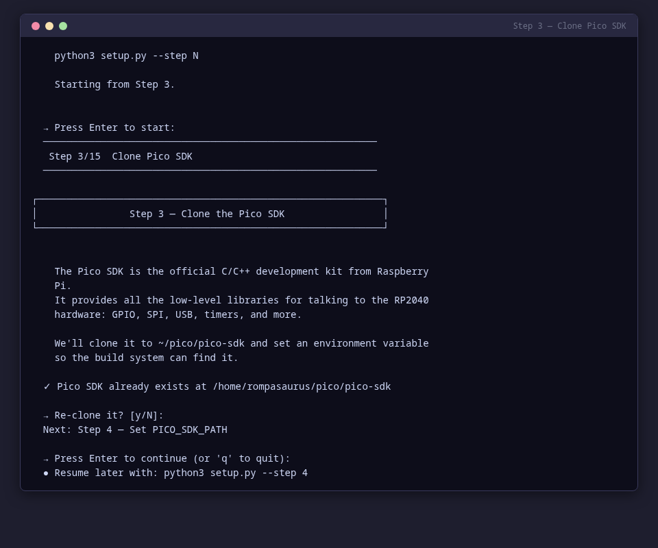
Step 4 — Set PICO_SDK_PATH¶
Configures your shell to find the Pico SDK by appending export PICO_SDK_PATH=... to your .zshrc or .bashrc.
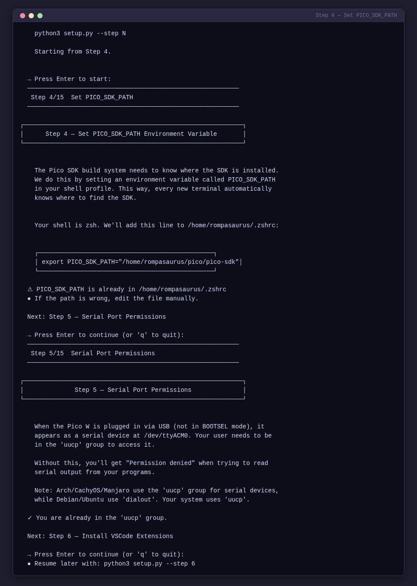
Step 5 — Serial Port Permissions¶
Adds your user to the correct serial group (uucp on Arch/CachyOS, dialout on Debian/Ubuntu) so you can access /dev/ttyACM0 without sudo.
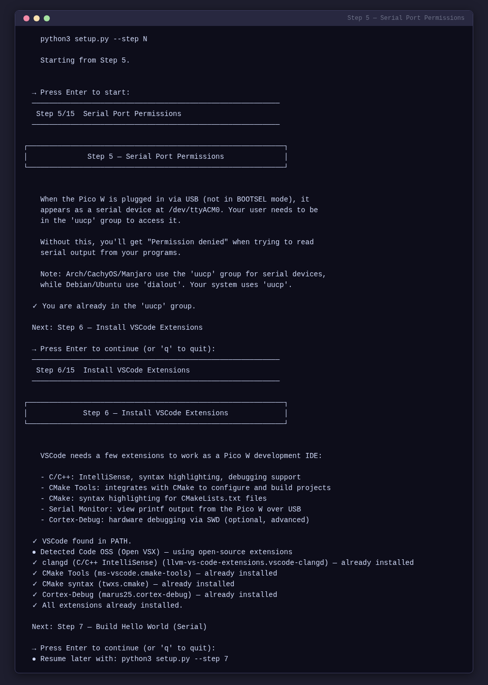
Step 6 — Install VSCode Extensions¶
Installs development extensions for VSCode. Automatically detects Code OSS (Open VSX marketplace) vs proprietary VSCode (Microsoft marketplace) and installs the appropriate extensions.
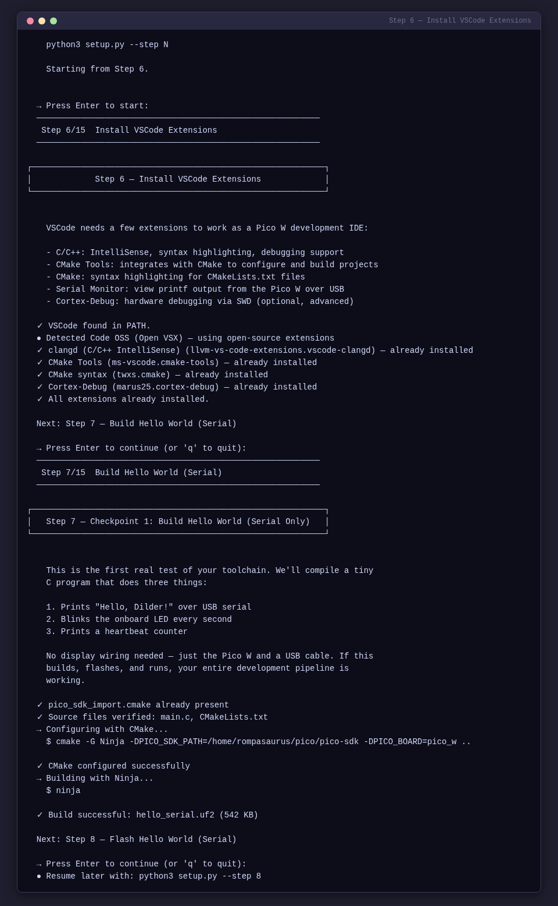
Step 7 — Build Hello World (Serial)¶
Compiles the serial-only test firmware. No display wiring needed — this verifies your toolchain end-to-end.

Step 8 — Flash Hello World (Serial)¶
Guides you through putting the Pico W in BOOTSEL mode, auto-detects the RPI-RP2 mount point, and copies the .uf2 firmware file.
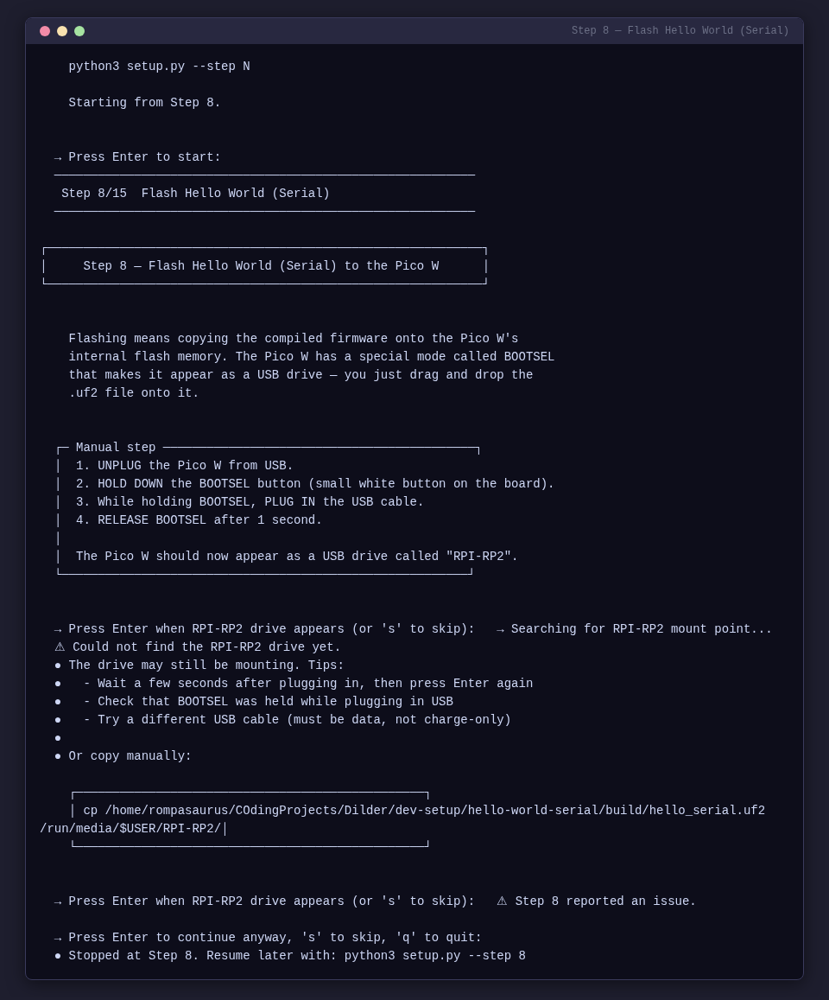
Step 9 — Verify Serial Output¶
Opens a serial monitor and shows you what to expect. Confirms Checkpoint 1 is complete.
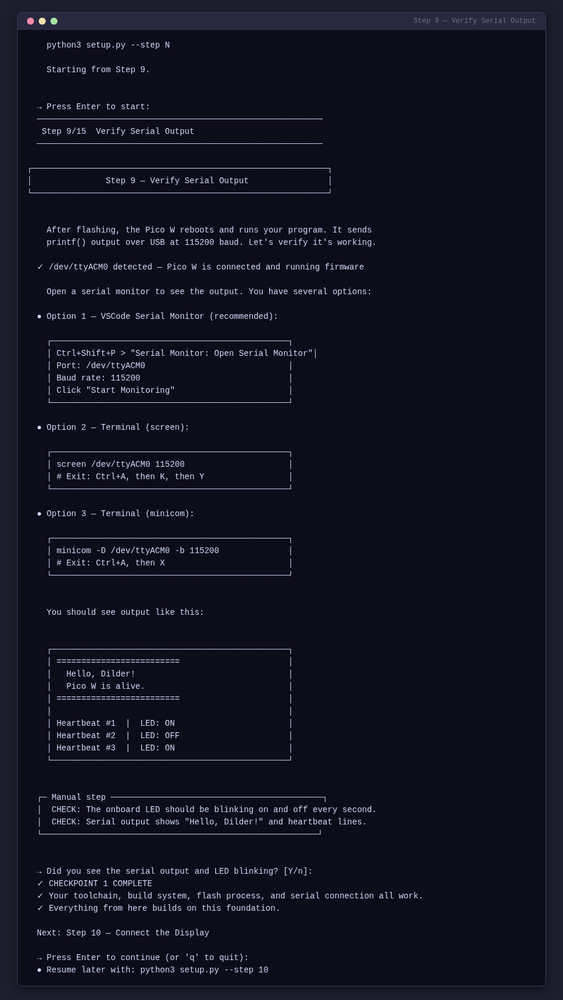
Checkpoint 1 — Serial Hello World
At this point your toolchain, build system, flash workflow, and serial communication are all verified. The Pico W is running your firmware and talking back over USB.
Step 10 — Connect the Display¶
Step-by-step instructions with ASCII diagrams for sliding the Waveshare e-Paper HAT onto the Pico W headers. Includes alignment guides and pin verification.

Step 11 — Get Waveshare Library¶
Downloads the Waveshare C display driver and font files, copies them into the project's shared library directory.
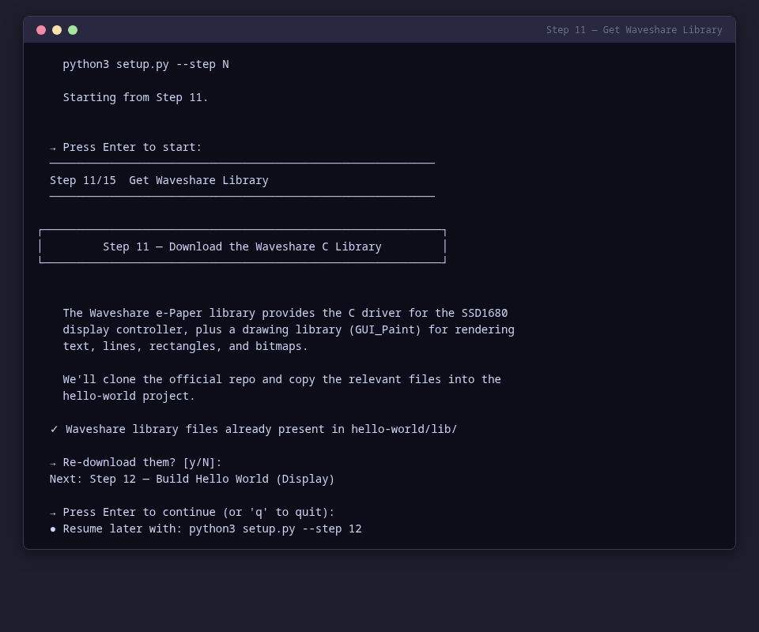
Step 12 — Build Hello World (Display)¶
Compiles the display test firmware using CMake + Ninja with the Waveshare library linked in.

Step 13 — Flash Hello World (Display)¶
Same BOOTSEL flow as Step 8, but flashes the display firmware (hello_dilder.uf2).
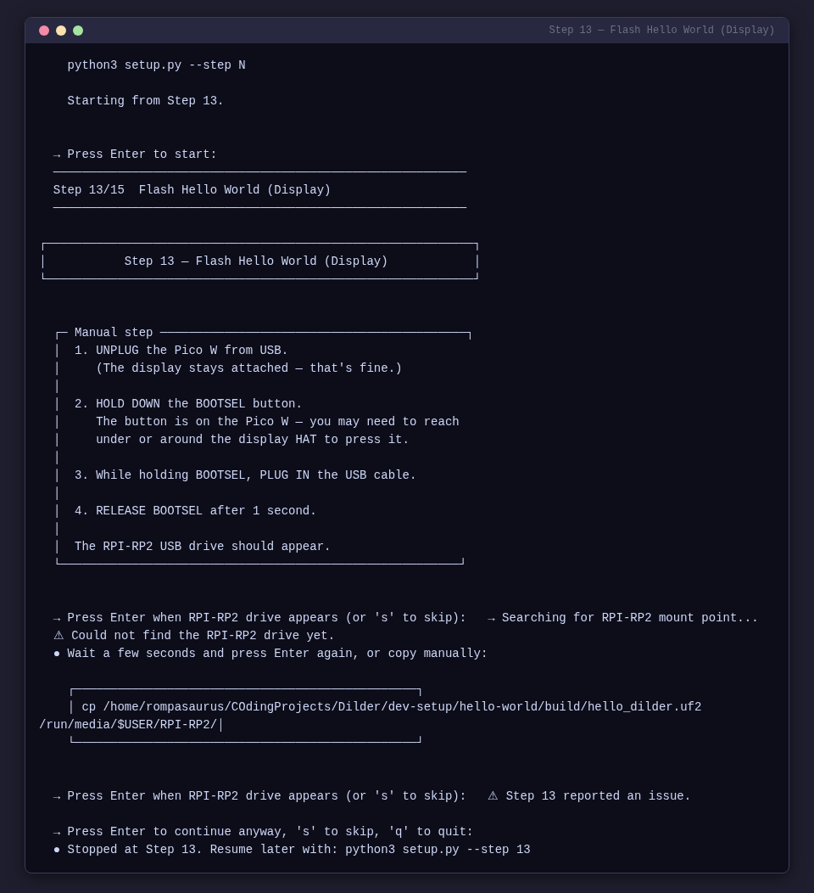
Step 14 — Verify Display Output¶
Confirms text appears on the e-ink display. Shows the expected output and prints the Checkpoint 2 completion banner.
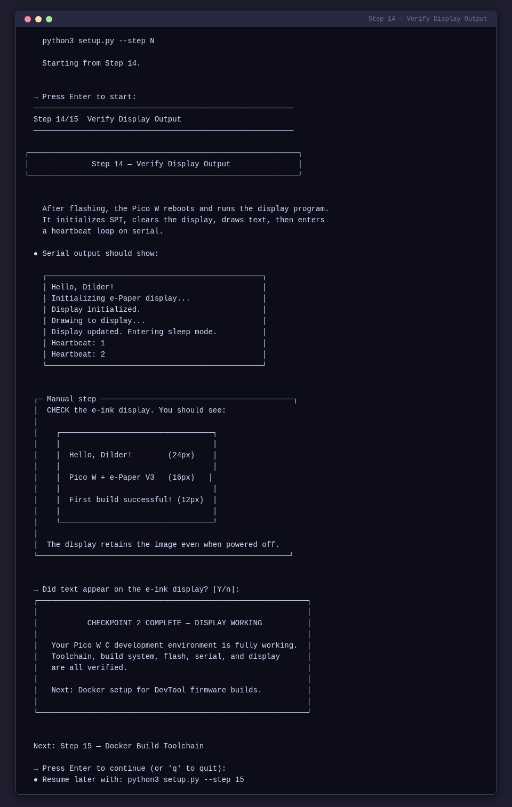
Checkpoint 2 — Display Working
Your Pico W C development environment is fully working. Toolchain, build system, flash, serial, and display are all verified.
Step 15 — Docker Build Toolchain¶
Installs Docker, verifies the daemon and docker-compose are available, checks for project build files, and pre-builds the ARM cross-compilation container image.

Checkpoint 3 — Setup Finished
Docker toolchain is ready. The DevTool can now build and flash standalone firmware to the Pico W. Launch it with python3 DevTool/devtool.py.
Features¶
- Distro detection — automatically detects Arch/CachyOS vs Ubuntu/Debian for package manager commands and serial group names
- Resume support — tracks which steps are complete; use
--step Nto jump to any step - BOOTSEL detection — scans for the
RPI-RP2mount point usingfindmnt/lsblkwith retry for automount delays - Build error reporting — captures both stdout and stderr from CMake/Ninja for clear error output
- ANSI terminal UI — colored output with spinners, boxed explanations, and step-by-step progress indicators
- Code OSS detection — detects Code OSS (Open VSX) vs proprietary VSCode and installs the correct extensions
- Testing setup —
--test-setupinstalls the full test suite dependencies (Tkinter, pytest, Playwright, MkDocs)
Status Dashboard¶
Run python3 setup.py --status to see a snapshot of your entire environment — toolchain, SDK, permissions, VSCode, builds, Docker, and testing framework:

If any step fails, the script explains the issue and lets you retry or skip. You can quit at any time with q or Ctrl+C and resume later with --step N.
Testing Setup¶
Run python3 setup.py --test-setup to install everything needed for the test suite:
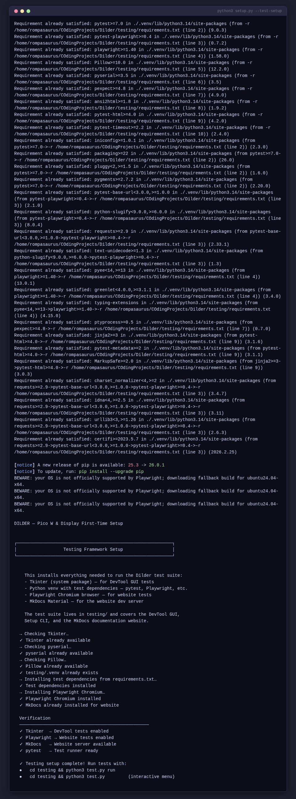
This installs:
- Tkinter (system package) — for DevTool GUI tests
- Python venv with test dependencies — pytest, Playwright, Pillow, pyserial
- Playwright Chromium — for website screenshot tests
- MkDocs Material — for the documentation site dev server
Hardware Requirements¶
| Item | Notes |
|---|---|
| Raspberry Pi Pico W | With male headers soldered on |
| Waveshare Pico-ePaper-2.13 | SSD1680 driver, Pico-native module — plugs directly onto Pico W |
| Micro-USB data cable | Must be a data cable, not charge-only — this is the #1 gotcha |
| Linux PC | Arch/CachyOS, Ubuntu, Debian, or Fedora |
No breadboard needed for display
The Pico-ePaper-2.13 has a 40-pin female header that slides directly onto the Pico W's male header pins. No jumper wires required for the display alone — use a breadboard when adding other peripherals (joystick, GPS, etc.).
Software Installed by the Script¶
| Tool | Purpose |
|---|---|
arm-none-eabi-gcc |
ARM cross-compiler for the RP2040 |
cmake + ninja |
Build system used by the Pico SDK |
pico-sdk |
Official Raspberry Pi Pico C/C++ SDK |
| VSCode extensions | C/C++ (or clangd for Code OSS), CMake Tools, Cortex-Debug |
| Docker + compose | Container-based ARM cross-compilation for standalone firmware |
Understanding the Hardware¶
The Pico W¶
- Chip: RP2040 — dual-core ARM Cortex-M0+ at 133 MHz
- RAM: 264 KB SRAM
- Flash: 2 MB onboard QSPI
- GPIO: 26 multi-function pins (3.3V logic — NOT 5V tolerant)
- USB: Micro-USB 1.1 — used for flashing and serial output
- Wi-Fi: 802.11n 2.4 GHz (Infineon CYW43439)
The Waveshare 2.13" e-Paper V3¶
- Resolution: 250 × 122 pixels, black and white
- Driver IC: SSD1680
- Interface: SPI (4-wire, Mode 0)
- Refresh: Full refresh ~2 sec, partial ~0.3 sec
- Minimum refresh interval: 180 seconds between operations
- Standby current: < 0.01 uA (practically zero)
Why C Instead of MicroPython¶
| C (Pico SDK) | MicroPython | |
|---|---|---|
| Speed | Native machine code, 133 MHz both cores | Interpreted, ~100× slower for compute |
| Flash usage | Your code only | ~700 KB for the interpreter alone |
| RAM | Full 264 KB available | ~180 KB after interpreter overhead |
| Timing | Deterministic, microsecond precision | GC pauses, non-deterministic |
| Debugging | SWD breakpoints, printf, full GDB | REPL print statements only |
| Libraries | Pico SDK, direct register access | Limited to what's been ported |
For a real-time pet with animations, input handling, and tight display refresh timing, C is the right choice.
Manual Setup Reference¶
If you prefer to run each command yourself instead of using the automated script, the full manual guide is available at dev-setup/pico-and-display-first-time-setup.md. It covers:
- Installing the C/C++ SDK toolchain (with distro-specific instructions)
- Docker build environment (optional)
- Configuring VSCode for Pico cross-compilation
- Building and flashing the serial Hello World
- Connecting the display (header-on-header, pin mapping)
- Building and flashing the display Hello World
- Printf debugging and SWD hardware debugging
- Comprehensive troubleshooting tables
Connecting the Display¶
The Pico W has male header pins soldered on. The Waveshare HAT has a female header socket that slides directly onto the Pico W headers.
Alignment¶
- Hold the Pico W with the USB port facing you.
- Hold the Waveshare HAT with its display face up and the 40-pin socket facing down.
- Align pin 1 on both boards.
- Press down firmly and evenly until the HAT is fully seated.
Side view (seated correctly):
┌─────────────────────────┐ Waveshare HAT (display face up)
│ ▓▓▓ e-ink display ▓▓▓ │
├─────────────────────────┤
│ female socket ▼▼▼▼▼▼▼▼ │
├═════════════════════════┤ <-- flush, no gap
│ male headers ▲▲▲▲▲▲▲▲ │
├─────────────────────────┤
│ Raspberry Pi Pico W │
└────────[USB]────────────┘
Disconnect USB first
Always disconnect the Pico W from USB before attaching or removing the display. Voltage spikes can damage the e-ink panel.
Pin Mapping¶
The HAT routes these signals through its PCB from the 40-pin socket to the display:
| e-Paper Signal | Function | Pico W GPIO | Pico W Pin # |
|---|---|---|---|
| VCC | 3.3V power | 3V3(OUT) | 36 |
| GND | Ground | GND | 38 |
| DIN | SPI MOSI | GP11 (SPI1 TX) | 15 |
| CLK | SPI clock | GP10 (SPI1 SCK) | 14 |
| CS | Chip select | GP9 (SPI1 CSn) | 12 |
| DC | Data/Command | GP8 | 11 |
| RST | Reset | GP12 | 16 |
| BUSY | Busy flag | GP13 | 17 |
Troubleshooting¶
Build Issues¶
| Problem | Solution |
|---|---|
arm-none-eabi-gcc: command not found |
Toolchain not installed. Re-run Step 2 |
PICO_SDK_PATH is not defined |
Set the environment variable (Step 4). Restart your terminal |
Could not find pico_sdk_import.cmake |
Copy it from the SDK (done automatically by the script in Step 7) |
| CMake error about missing submodules | Run cd $PICO_SDK_PATH && git submodule update --init |
Flashing Issues¶
| Problem | Solution |
|---|---|
| RPI-RP2 drive doesn't appear | Hold BOOTSEL before plugging in USB. Try a different cable — charge-only cables won't work |
| Drive appears but copy fails | Try picotool load instead. Check if the .uf2 file is 0 bytes (build failed) |
Serial Issues¶
| Problem | Solution |
|---|---|
/dev/ttyACM0 doesn't exist |
Pico not connected, charge-only cable, or firmware crashed before USB init |
Permission denied on /dev/ttyACM0 |
Add yourself to the serial group — uucp on Arch, dialout on Debian (Step 5), then log out and back in |
| Serial monitor shows nothing | Baud rate must be 115200. Check that stdio_init_all() is in your code |
Display Issues¶
| Problem | Solution |
|---|---|
| Display completely blank | Check VCC is on 3V3(OUT) pin 36, not VBUS pin 40 |
| Display flickers then goes blank | RST or BUSY wires swapped. Compare against the pin mapping table |
| Garbage/random pixels | Wrong driver version — confirm V3 on PCB silkscreen |
BUSY pin always high |
Display stuck mid-refresh. Disconnect power, wait 10 sec, reconnect, run Clear |
Quick Reference Card¶
| Action | Command |
|---|---|
| Build (serial) | cd dev-setup/hello-world-serial/build && ninja |
| Build (display) | cd dev-setup/hello-world/build && ninja |
| Flash | Hold BOOTSEL + plug USB, then cp build/<name>.uf2 /run/media/$USER/RPI-RP2/ |
| Flash (picotool) | picotool load build/<name>.uf2 && picotool reboot |
| Serial monitor | screen /dev/ttyACM0 115200 |
| Serial monitor (VSCode) | Ctrl+Shift+P > "Serial Monitor: Open Serial Monitor" |
| Clean rebuild | rm -rf build && mkdir build && cd build && cmake -G Ninja -DPICO_SDK_PATH=$PICO_SDK_PATH -DPICO_BOARD=pico_w .. && ninja |
| Build with Docker | cd dev-setup && docker compose run --rm build |